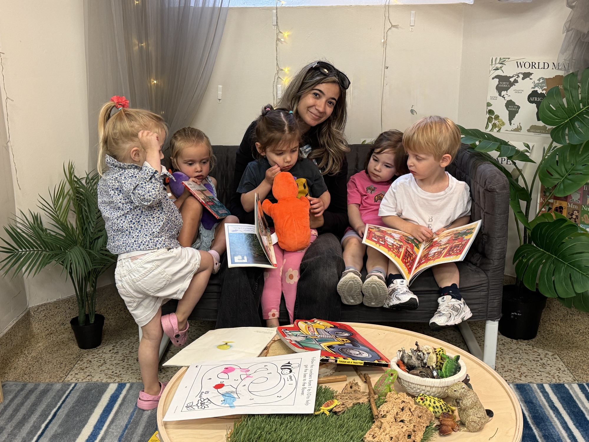
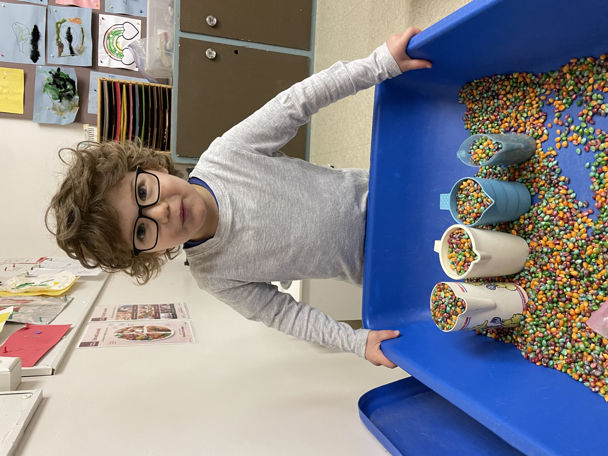
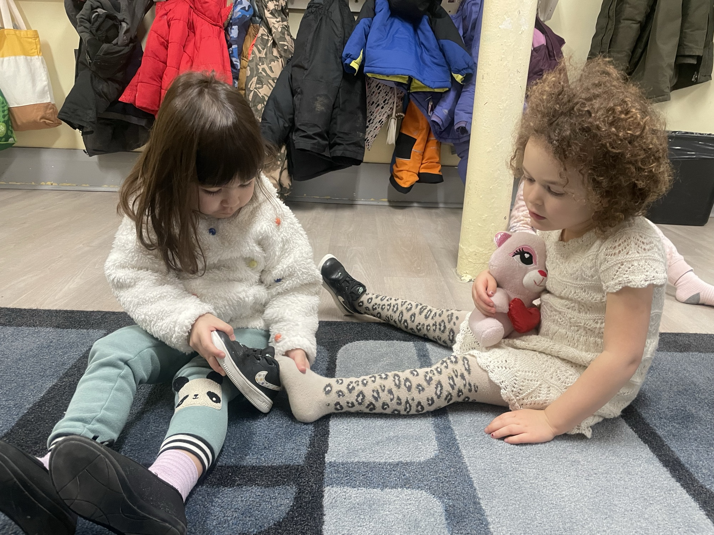
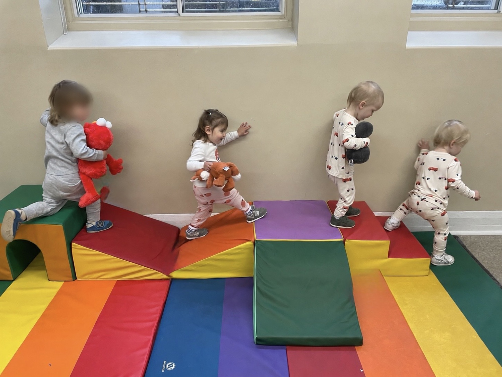
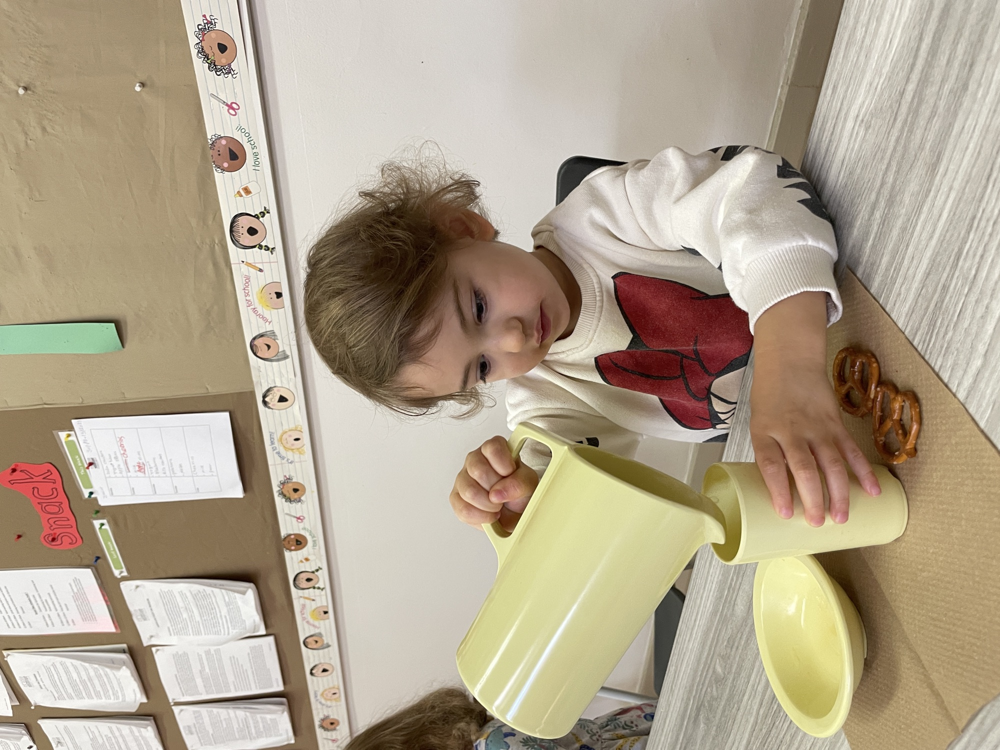
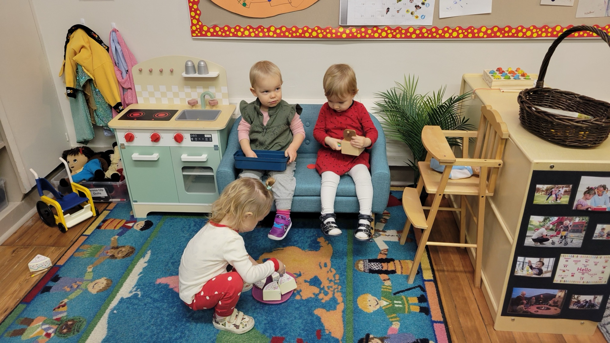
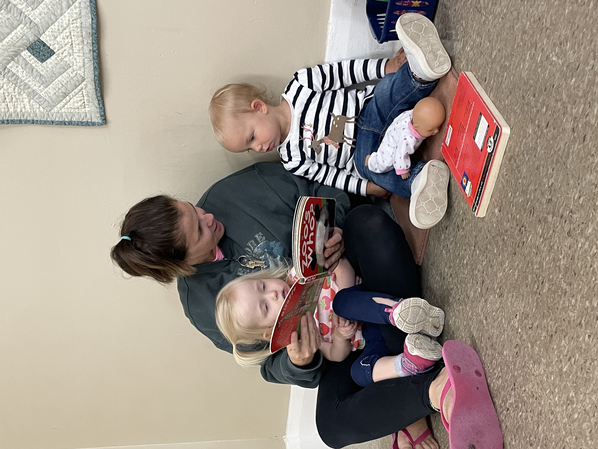
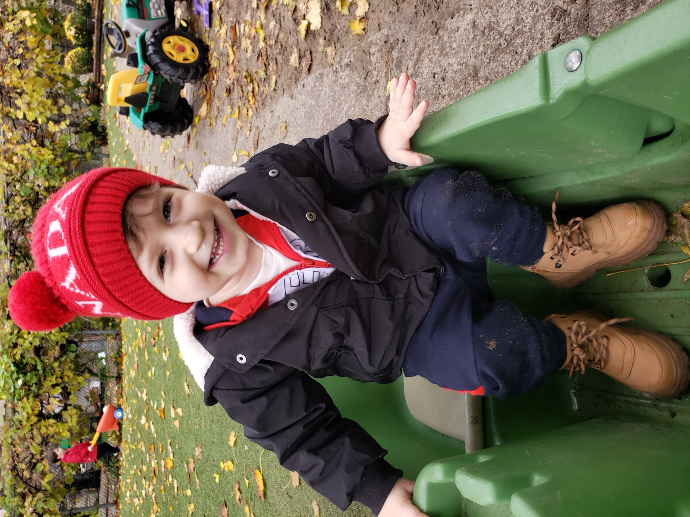
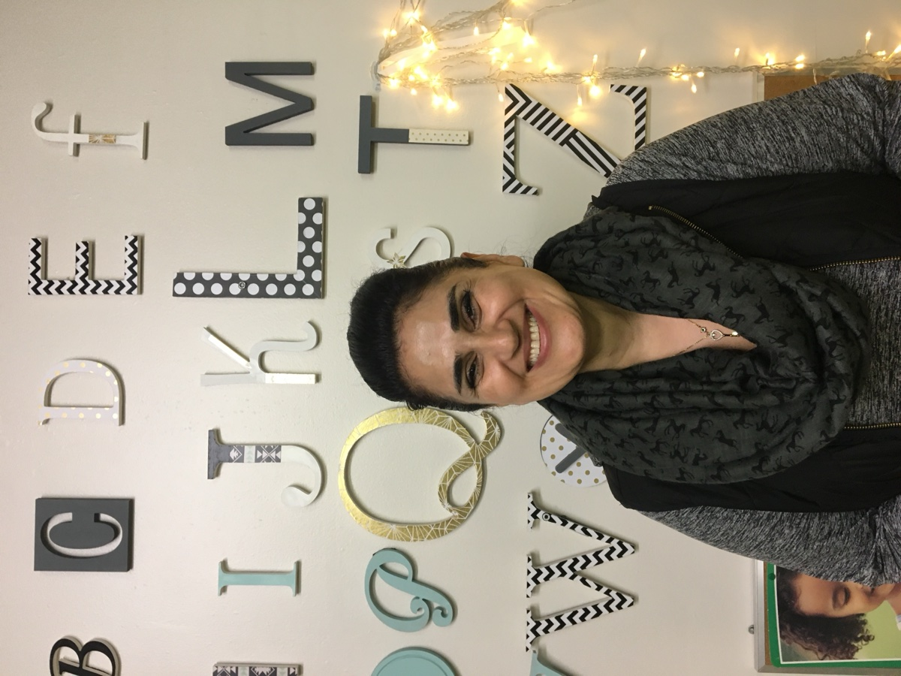

A warm, unhurried morning where your littlest one explores with their senses, finds their feet, and feels safe enough to try.
For most toddlers, Oriole is their very first time in a group setting away from a caregiver — so we keep it small, gentle and full of choice. The morning centres on sensory exploration, early language, growing independence and lots of active gross-motor play in our indoor gym. Children play happily alongside one another while a Registered Early Childhood Educator follows their lead. Toilet training isn’t required, and there’s plenty of time to settle in at a pace that’s right for your child.

Predictable, unhurried and full of choice — the structure that helps our littlest ones feel secure. (Doors open at 9; pickup at noon.)

Settling in & hellos

Active indoor play

Healthy, made on-site

Activities & exploring

Songs & stories

Goodbyes at noon
Our educators plan fresh activities each week across nine areas of the room — here’s the kind of thing your toddler will dive into.
Pom-pom sorting, picture-matching games, letter rocks, little-people scenes, puppets and books with props.
Animal colour-sorting, shape sorters, magnetic sticks & balls, busy boards, coin boxes and number play.
Playdough with cutters & tools, easel painting, glue, foil & sparkles, bug stamps and seasonal collage.
Bins of black beans, soil & bugs, rice, moon sand and water-table scoops — all about little hands and big senses.
Strollers & carts, tunnels, ride-on cars, soft climbers, see-saw and slides in our toddler-sized gym.
Dolls, play kitchen, doctor’s office, dress-up, phones and keys — the roots of language and imagination.
Wooden trains & tracks, magnatiles, ramps & cars, mega blocks and stacking — building and problem-solving.
Rocks, magnifying glasses, shells, colour paddles, sound shakers and sensory cubes to handle and wonder about.
Circle-time songs, scarves & ribbons, yoga, obstacle courses and daily favourites that get everyone moving.
Feeling safe and happy away from home for the first time.
New vocabulary, songs and the joy of being understood.
Self-help skills, tidying up and trying it themselves.
Exploring texture, colour and how the world works.
The first social steps — alongside, then with, new friends.
Daily music & movement and a gentle weekly French session on Fridays — plus a rotating mix of the sensory and active play below, always pitched to little ones.
Monthly tuition, billed over our 10-month school year (September–June). As a co-operative, participating families pay less by lending a hand on Duty Days; non-participating tuition covers a hired assistant instead. Limited spaces available for 2026/27.
| Enrolment | Participating (with Duty Days) | Non-participating |
|---|---|---|
| 5 mornings / weekMonday – Friday | $890 / mo | $1,135 / mo |
| 3 mornings / weekMon · Wed · Fri | $703 / mo | $952 / mo |
| 2 mornings / weekTue & Thu | $562 / mo | $811 / mo |
All mornings run 9:00 a.m.–12:00 p.m. Looking ahead: once your child is 2.5, our new extended day (9:00–2:45, in the Junior and Senior classes) becomes available. Participating families assist on a Duty Day once bi-weekly per child; if you can’t attend, you may hire an assistant for $100/day or swap with another family. Oriole is a non-profit co-operative and has opted out of CWELCC. Fees are confirmed annually and published each spring — please confirm current rates when you apply.
View the full fee schedule — payment breakdown, dates & policies →
Tell us a little about your child and we’ll send program details and answer your questions.
Throughout the year, the Toddler room fills with guests, celebrations and a few gentle adventures.
An informal autumn get-together where families get to know the teachers and each other.
A morning together with the animals.
A spring field trip among the flowers.
Friendly animal visitors come to school.
An interactive music & rhythm experience.
A joyful family sing-along.
Gentle yoga and mindful movement.
Children share music from home.
PJ parties, Halloween, and a French Valentine’s morning.
A caregiver-appreciation tea and performance.
A community-hall celebration for all the family.
A proud send-off at the end of the year.

Marzi has loved being around children since high school, and she brings that same warmth and energy to the Toddler room every day. She delights in watching little ones grow, crawl, walk, talk and learn.
She graduated with honours in Early Childhood Education from Seneca College and has worked as an RECE for more than 17 years — running nursery and parenting programs, and observing and documenting children’s development across LINC, Queen’s Park Child Care, the YMCA and Oriole. When she isn’t with the children, she enjoys reading, movies, yoga and time with her family.
“It was our son’s first time away from us, and Marzi made the whole thing feel easy. He went from clinging at the door to running in to say hello.”
No. Toilet training isn’t required for any class. We work alongside you to encourage toileting readiness as a positive, pressure-free experience when your child is ready.
Our Toddler Class doesn’t use the outdoor playground. Instead, the children get vigorous, active gross-motor play every day in our indoor gym — climbers, tunnels, ride-on toys and plenty of room to move safely at a toddler-friendly level.
A co-operative is a non-profit run together with its families. Participating parents help in the classroom on a Duty Day once every two weeks and take on a small volunteer role, which keeps classes small, fees lower and the community close. Prefer not to participate? Non-participating tuition covers a hired assistant instead. We’ll walk you through both options on your tour — or see how the co-op works and the volunteer roles.
The Toddler Class runs mornings, 9:00 a.m.–12:00 p.m., from early September to mid-June. You can choose 2 mornings (Tue & Thu), 3 mornings (Mon, Wed, Fri) or 5 mornings a week.
The Toddler Class stays small — a maximum of eight children per morning — with a Registered Early Childhood Educator (RECE) leading the room and additional support to keep ratios low.
A nutritious snack and water are provided on-site every day. Oriole is a nut-safe environment, so we ask that no homemade snacks come from home.
Children move up to our Junior Preschool around 2.3–2.6 years, once they’re comfortable navigating stairs and the playground — always at a pace that’s right for your child, and with priority for current families.
Not at this time. Our board found that staying outside CWELCC protects our program quality, staffing flexibility and financial stability as a small co-op.
Enrolments are open for the 2026/2027 school year. Come visit and meet Marzi.